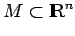
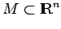
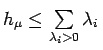
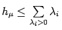
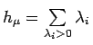

Inhalt Index DeskTop Bronstein

 Dynamische Systeme und Chaos Quantitative Beschreibung von Attraktoren Lyapunov-Exponenten
Dynamische Systeme und Chaos Quantitative Beschreibung von Attraktoren Lyapunov-Exponenten


Ist  ein dynamisches System auf  mit dem Attraktor
ein dynamisches System auf  mit dem Attraktor  und einem auf
und einem auf  konzentrierten ergodischen Wahrscheinlichkeitsmaß
konzentrierten ergodischen Wahrscheinlichkeitsmaß  , so gilt für die metrische Entropie
, so gilt für die metrische Entropie  die Ungleichung , wobei die LYAPUNOV-Exponenten entsprechend ihrer Vielfachheit aufgeführt werden.
die Ungleichung , wobei die LYAPUNOV-Exponenten entsprechend ihrer Vielfachheit aufgeführt werden.
Pesinsche Formel: Die Gleichheit , die PESINsche Formel, gilt im allgemeinen nicht. Ist das Maß  allerdings absolut stetig bezüglich des LEBESGUE-Maßes und
allerdings absolut stetig bezüglich des LEBESGUE-Maßes und  ein C2-Diffeomorphismus, so gilt die PESINsche Formel.
ein C2-Diffeomorphismus, so gilt die PESINsche Formel.